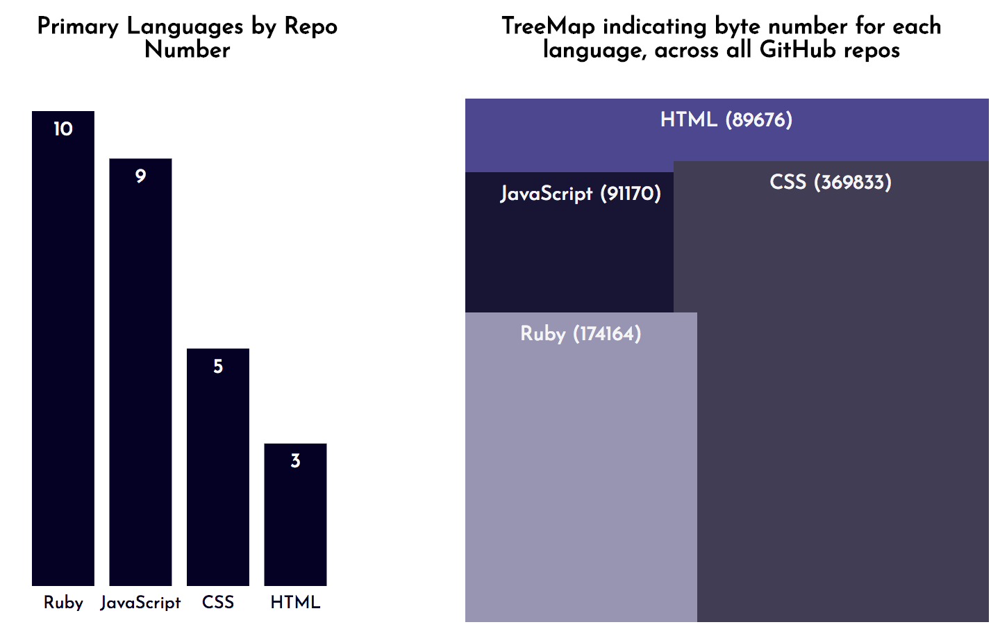

Thanks for stopping by!
I’m a Junior Web Developer with a passion for building apps that are functional and visually appealing.
I previously worked in the life science industry. I decided to pursue web development because I wanted a new career where technical problem solving would be a bigger part of of my daily routine. I completed The Iron Yard’s immersive, full-stack developer course in October, 2017.
I love the feeling of satisfaction I get from resolving bugs in just a few lines of code, as well as the thrill that comes with delivering a beautiful, effective web product. I’m looking for an opportunity to contribute my skills and continue to grow as a developer.
My resume is available on the side bar to the left (see button at top). Feel free to connect with me via email at ginniehench@gmail.com or on LinkedIn
I’m still adding features to this site, so stop back again soon!
Cheers!
Skills and Experience
Languages: JavaScript, Ruby/Ruby on Rails, HTML, CSS, NodeJS, SQL
Tools and Operations: REST API’s, Heroku, Git, GitHub
JavaScript libraries: D3.js for data visualization, Datejs, Jquery
Ruby Libraries and Gems: CSV library, Pg to interface with PostgreSQL, BCrypt, Paperclip, CarrierWave, Dotenv, Figaro
Node Modules: Express with Validator, Passport, Express-Session, Cookie-Session, Mustache, MongoDB, Mongoose
The scatter plot above usees data pulled from GitHub's REST API and was constructed using the D3.js library (D3 = Data-Driven Documents). To see the language and project repository names, just hover over each data point. The code is available on GitHub.
The graphics below are based on the same data used for the scatterplot. I snapped the screenshot from a Sinatra/Ruby app I hosted locally. For more details on the app, see the README.md file on the project repo.
Portfolio
This section of the site is still under construction, but will be available soon.
In the meantime, I've pinned repos for some of my featured projects on my GitHub site at github.com/gingin77 .
Also, I've included descriptive details about some of these projects on my resume, which is available to view and download.
Contact Information
If you'd like to connect, I can be reached via email and over LinkedIn. If you prefer other forms of social media, feel free to follow me at any of the sites listed below.

| ginniehench@gmail.com | |
| Ginnie Hench on LinkedIn | |
| @engineniches on Twitter | |
| Ginnie Hench / gingin77 on GitHub | |
| Ginnie Learns to Code on Wordpress |